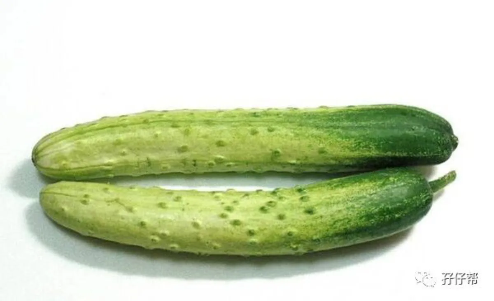
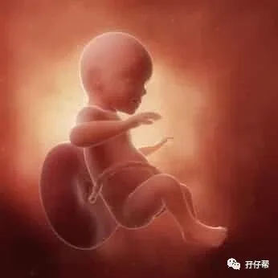
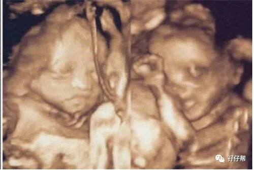
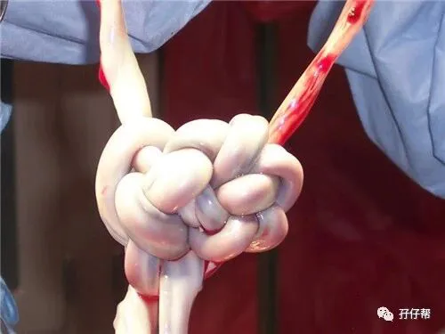
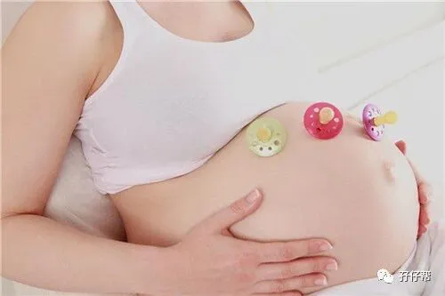

文|圆圈妈 一个文思如尿崩的双胎妈妈
图|来自网络，如有侵权，请联系删除
· 正 · 文 · 来 · 啦 ·
【01】两胎儿的发育情况
孕26周的胎宝宝有黄瓜那么长了，从头部到臀部长约31.7CM，约674G▼:
孕26周的双胞胎胎儿发育图▼：
B超孕26周的双胞胎胎儿影像图▼：
【02】圆圈妈的孕期回忆录
Ⅰ 又被TTTs 吓个半死
可能是孕中期太滋润了，有点欠收拾，我不知哪根神经搭错线了。
刚上班打开电脑就鬼使神差地打开早孕期曾关注的一个关于TTTs的帖子。
帖子是一个双胞胎准爸爸写的，他声泪俱下地描述他的老婆，单绒双羊，在孕25周确诊TTTs2期，然后一家四口开始漫漫求医之路。
最痛苦的是那位准妈妈，她为了保住两个宝宝接受非人般的抢救治疗，默默地承受着常人无法体会到的痛苦....
看完之后，我的心情瞬间跌落谷底…
那位准妈妈跟我差不多孕周,我马上对号入座了，我好担心跟那位宝妈一样,被TTTs砸中了。
苍天啊！我的两个崽才26周，不能那样对我啊！
还以为四维大排畸通过后，就可以放松对TTTs 的警惕了。
怎知即便是四维顺利通过，两胎儿的发育状况随时都在变化，在没有生下来之前，任何时候都不能掉以轻心。
难怪有人说，在两宝宝平安生出来之前，顺利度过围产期之后，才算是真正生了对双胞胎。
生一对双胞胎，得遭多少罪啊，大家都对双胞胎宝宝羡慕不已，觉得一胎搞定俩，非常幸运。
可是如果要我选择，我宁愿他们一个个来。
且不说肉体上备受折磨，精神上的打击更让人心力交瘁。
双胎妊娠是高危妊娠，比单胎妊娠摊上并发症的几率高很多…我不敢想象！
我很确定，我不是个坚强的人，我一定不能坚持到最后！
我越想越怕,越看越惊恐，好像我也被确诊了TTTs，我踉跄着跑到洗手间，崩溃大哭…
一边哭一边打电话给圆圈爸，刚一接通就哽咽到语无伦次...
“要不，我熬到28周就去剖吧，我太难受了！这种日子太难熬了！”
最后，圆圈爸横跨半个深圳，来到我的办公室收拾残局，把吓到灵魂出窍的我带回了家里！
晚上，我化恐惧为饭量，史无前例撑下了两碗饭，大家都惊呆了，劝我悠着点吃！
我一脸苦笑，他们都不知道我心里的苦，内心的怕。
如果多吃可以帮助两胎儿更好地成长发育,让我吃什么都行,做什么都行,多辛苦都无所谓!
我只希望两宝宝健健康康地来到我身边。
Ⅱ 胎动是拯救魔怔的灵丹妙药
每次情绪低落时，只要感知到他们活力四射的胎动就会重新振作起来。
他们的胎动总能神奇地平息我对双胎并发症的各种忌惮和恐慌。
于我而言，治疗孕期恐惧症唯一解药就是胎动。
每天早晨，伴随着他们一阵群魔乱舞的狂踢，我又迎来新的一天，第一时间感知着他们的存在,非常感恩，知足。
看着窗外投入进来的那一缕阳光，心里就有一股希望燃起来，早上好啊！我们仨新的一天！
有时候，真希望这种“合为一体”能一直保持下去。
一个身体，三个心跳。
多么神奇的存在啊！
Ⅲ 一直贫血，我吃的是假药吗？
可能是贫血的缘故，白天我总感觉特别困，似乎总是睡不醒，疲倦感一波又一波地袭来...偶尔还伴随着眩晕感！
周末，我也是懒懒的样子，总是睡睡醒醒的状态，睡醒之后，吃点东西，最多两个小时，我又想睡了。
我很怀疑我吃得那些生血宁片是假货，不然怎么一点用都没有。
真担心再这样下去，总有一天会晕在床上再也起不来了。
Ⅳ 发现初乳，羞羞哒！
自从有胎动之后，我就没怎么关注乳房，这周不小心留意了下，才知道我的“咪咪”变得无敌丑，乳晕和乳头变大变黑，乳头稍微一刺激就很敏感。
洗澡的时候，还发现乳头上有淡黄色的分泌物，有些已经结痂了，我没敢去抠，担心积压乳头会引起宫缩。
网上说是初乳！
纳尼！实在辣眼睛，还没生，怎么就有初乳了！
☞☞TIPS☜：我一直以为初乳是生完孩子之后才会冒出来，原来孕期就会有乳汁分泌了。
因此，当我看到乳头上那稠厚，颜色或黄或白的东西时，是一脸懵逼的。
其实，一般到了怀孕七八个月左右，乳房就会有初乳溢出，双胞胎孕期群也有部分准妈妈反馈早在24周就发现有乳汁的踪迹！
如果你发现初乳，可是乳头凹陷无法清洗，那请温柔点，对乳头进行常规的日常护理和清洗即可，不必过分揉搓。
也不必担心乳头凹陷影响母乳喂养，孕期暴力牵拉乳头会增加流产和早产的风险。
Ⅴ 孕妇照搁浅了
不知何时，昔日白花花的肚皮上若隐若现地冒出多条血管，好像群魔乱舞的五线谱，纵横交错着。
肚皮上的瘙痒感与日俱增，痒得让人极度抓狂，真恨不得把肚皮割下来炖花生吃！
一直计划着去拍一组孕妇照，看见这样的肚子，什么热情都没有了。
孕妇写真的价格也不便宜，想起和圆圈爸的婚纱照早就被用来垫桌脚了，最后决定不拍！省钱给两崽买尿布。
☞☞TIPS☜☜：如果你有计划拍孕妇照，那你得抓紧时间筹备了。
选影楼，谈价格，选衣服...凭女人天生磨叽磨叽的能耐，26周开始准备孕妇照一点都不嫌早了！
综合那么多双胎妈妈的经验，拍孕妇照的最佳时期是28—30周。
太早拍，肚子还不够大，无法突出双胎孕肚的巨大特点。
太晚拍了，怕孕妇自身受不了，毕竟拍孕妇照还是挺折腾的，要走来走去，摆来摆去，甚至为了某些造型动作豁出去那种。
而且确实有准妈妈拍完孕妇照后突然早产的例子，想想就怕怕哦。
妆容尽量自然，孕妇形象的你，个人觉得，比较适合淡妆哈！
款式造型搭配尽量简单，那些大摆尾影响你走路的服装就别选了，这万一一个踉跄摔倒了，就真的划不来了。
不要为了某些姿势为难自己，高难度的动作姿势就免了吧！别逞能哦！
其他的没啥了，尽情享受孕期难得的臭美一刻吧！
Ⅵ 奇奇怪怪的阴道分泌物
发现这周的阴道分泌物越来越多了，性状也不一样了。
早孕期的分泌物是拉丝粘稠鼻涕状，此时的分泌物有点淡绿色，豆花状。
已经连续好几天这样了，特别是早晨，晨尿完会看到很浅的绿色粘稠物，依附在马桶上，量不多，没有味道。
虽然平时没觉得哪里不适，可是我依然觉得不对劲，我不敢怠慢，打算下次产检让医生做个内检。
☞未完待续☜
上期推文:
连载（一）|圆圈妈双胞胎怀孕过程第4周
连载（二）|圆圈妈双胞胎怀孕过程第5周
连载（三）|圆圈妈双胞胎怀孕过程第6周
连载（四）|圆圈妈双胞胎怀孕过程第7周
连载（五）|圆圈妈双胞胎怀孕过程第8周
连载（六）|圆圈妈双胞胎怀孕过程第9周
连载（七）|圆圈妈双胞胎怀孕过程第10周
连载（八）|圆圈妈双胞胎怀孕过程第11周
连载（九）|圆圈妈双胞胎怀孕过程第12周
连载（十）|圆圈妈双胞胎怀孕过程第13周
连载（十一）|圆圈妈双胞胎怀孕过程第14周
连载（十二）|圆圈妈双胞胎怀孕过程第15周
连载（十三）|圆圈妈双胞胎怀孕过程第16周
连载（十四）|圆圈妈双胞胎怀孕过程第17周
连载（十五）|圆圈妈双胞胎怀孕过程第18周
连载（十六）|圆圈妈双胞胎怀孕过程第19周
连载（十七）|圆圈妈双胞胎怀孕过程第20周
连载（十八）|圆圈妈双胞胎怀孕过程第21周
连载（十九）|圆圈妈双胞胎怀孕过程第22周
连载（二十）|圆圈妈双胞胎怀孕过程第23周
连载（二十一）|圆圈妈双胞胎怀孕过程第24周
连载（二十二）|圆圈妈双胞胎怀孕过程第25周
下期预告：
连载（二十四）|圆圈妈双胞胎怀孕过程第27周




